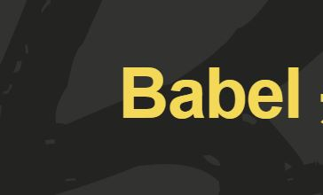

我的常用技能


 w3schools
w3schools
领先的 Web 技术教程
w3schools.com 是最受欢迎的前端技术教程网站,全球最大的中文 Web 技术教程。... 在w3school,你可以找到你所需要的所有的网站建设教程。
最近学习进程

图表库ECharts的使用 --- 官網 http://echarts.baidu.com/（已学完）
ECharts是一个兼容绝大部分浏览器，可流畅运行在PC和移动设备上的纯 Javascript 的图表库。ECharts 提供了折线图，柱状图，散点图，饼图，K线图，盒形图等常规图，还有可视化的地图、热力图、线图，、可视化的关系图等。多样的图表、丰富绚丽的视觉效果、流畅的交互，用来做数据统计分析是再好不过了。ECharts 是最让我惊艳的一款数据产品，它满足了甚至超越了我对数据可视化的所有想象，无论是颜值，实用性，还是易用性。ECharts,發現數據可用之美

git教程 --- 來源 廖雪峰官方網站 www.liaoxuefeng.com （已学完）
史上最浅显易懂的Git教程！Git是什么？ Git是目前世界上最先进的分布式版本控制系统（没有之一）。 Git有什么特点？简单来说就是：高端大气上档次！Linus花了两周时间自己用C写了一个分布式版本控制系统，这就是Git！一个月之内，Linux系统的源码已经由Git管理了！牛是怎么定义的呢？大家可以体会一下。 Git迅速成为最流行的分布式版本控制系统，尤其是2008年，GitHub网站上线了，它为开源项目免费提供Git存储，无数开源项目开始迁移至GitHub，包括jQuery，PHP，Ruby等等。
Babel的使用 --- 官網 http://babeljs.cn/（已学完）
Babel 是一个 JavaScript 编译器。 今天就来用下一代 JavaScript 语法写代码吧！Babel 用于转化你的 JavaScript 代码
ECMAScript 6 入门 --- 官網 http://es6.ruanyifeng.com/ （正在学习阶段）
《ECMAScript 6 入门》是一本开源的 JavaScript 语言教程，全面介绍 ECMAScript 6 新引入的语法特性。